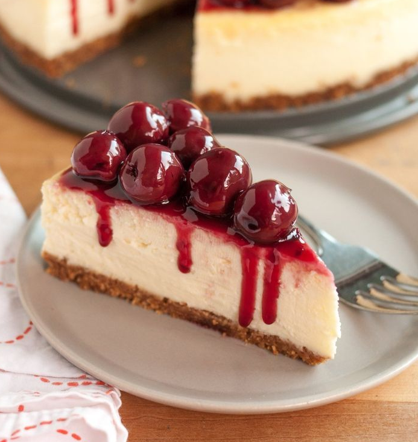

- 25 Minutes
- 12 Ingredients
- 3-5 Servings
Vegan Blueberry
This vegan blueberry cheesecake is so easy to make and requires no baking. It's got an intense blueberry flavor and color thanks to a homemade blueberry sauce. The perfect no-bake cheesecake for any occasion.

- 10 Minutes
- 8 Ingredients
- 3 Servings
Banana Parfait
This homemade Banana Parfait is an easy, no-bake treat that is bursting with sweetness and freshness in each spoonful! It is ideal when you are looking for a gourmet-style dessert

- 20 Minutes
- 6 Ingredients
- 3-4 Servings
Cheesecake
Cheesecake is a sweet dessert consisting of one or more layers. The main, and thickest, layer consists of a mixture of a soft, fresh cheese (typically cottage cheese, cream cheese or ricotta), eggs, and sugar.